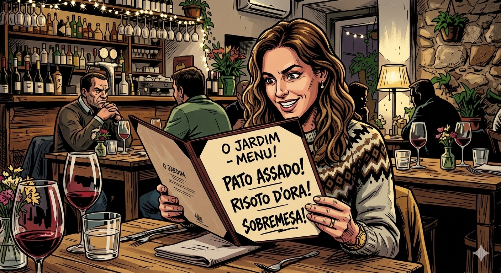

Roteiro da Aula:
preload.js e o ContextBridge.Segurança em primeiro lugar
Na Aula 07 vimos que o Main Process é o Node.js (tem poderes totais) e o Renderer é o Chromium (apenas a tela).
Se o código HTML/JS do seu botão pudesse deletar arquivos do Disco Local C: diretamente, qualquer falha no site (ou script injetado) destruiria o computador do usuário.
Por padrão de segurança, o Electron CORTA a comunicação direta entre o Front-end e o Node.js.
Como um botão HTML (Renderer) avisa o Node.js (Main) para fechar o programa ou salvar um arquivo de texto?
Através do IPC (Inter-Process Communication). É um sistema de rádio-transmissor interno do Electron.
Clica no Botão "Salvar"
Rádio (IPC)
Manda a mensagem "SALVAR_ARQUIVO"
Ouve a mensagem e salva no Disco Rígido
preload.jsPara usar o rádio IPC com segurança, o Electron nos obriga a criar um terceiro arquivo: o Preload.
A Analogia do Restaurante:

O Cliente que olha o cardápio e faz o pedido (Interface gráfica). Ele não pode entrar na cozinha.
O único autorizado a falar com o Cliente e a entrar na Cozinha. Leva os pedidos de um lado para o outro de forma segura.
O Chef que tem as panelas e facas (Node.js). Prepara o prato pesado e interage com o sistema operacional.
Ajustando o Main e criando o Garçom
No nosso index.js (Main), precisamos dizer à janela para carregar o script preload.js antes do HTML aparecer.
path.join(__dirname, 'preload.js') garante que ele ache o arquivo independente de ser Windows ou Mac.
Agora crie um arquivo vazio chamado preload.js.
Usaremos a ferramenta contextBridge para criar uma "Ponte Segura". Ela pega funções do lado de cá (Node) e expõe para o lado de lá (HTML/Window).
Fazendo o Rádio Funcionar
Aquele objeto 'api' que criamos no Preload agora está injetado magicamente no nosso navegador (na variável global window).
O Front enviou a mensagem pelo canal 'canal-mensagem'. Mas o Main precisa estar "ouvindo" essa estação de rádio para agir.
window.api.enviar()
ipcMain.on(...)
window.api.ipcRenderer.send().ipcMain.on() e executa o código pesado (console/arquivos).Tudo isso que acabamos de montar forma a base de uma das arquiteturas mais famosas do mercado: o MVC (Model-View-Controller).
O seu HTML/CSS. Apenas exibe os botões e interage com o utilizador. É "burra", não sabe acessar bancos de dados nem salvar arquivos.
O Preload e o IPC. Recebe os cliques da View, entende o que o usuário quer fazer, e roteia a ordem para o sistema central. É o maestro.
O Main (Node.js). Onde o trabalho pesado e as regras de negócio reais acontecem. Consulta o banco de dados (MySQL) ou salva documentos no PC.
Manter as responsabilidades separadas é o segredo de um código limpo!
Se você removeu as bordas da janela na Aula 07 (frame: false), como o usuário fecha o app? Criando um botão de Sair no HTML!
contextBridge.exposeInMainWorld('api', {
fecharApp: () => ipcRenderer.send('fechar')
});
botao.addEventListener('click', () => {
window.api.fecharApp();
});
ipcMain.on('fechar', () => {
app.quit(); // Comando poderoso do Node/Electron para matar o processo
});
Crie a estrutura completa (HTML, Preload e Main) para resolver os desafios abaixo enviando comandos Front -> Back.
console.log("ALARM ALARM ALARM") três vezes no terminal do VSCode.frame: false). Crie um botão HTML vermelho escrito "Fechar Sistema" que usa IPC para acionar o app.quit() no Main.BrowserWindow.getFocusedWindow().minimize().janela.setSize(largura, altura).BrowserWindow para preto usando o comando janela.setBackgroundColor('#000').